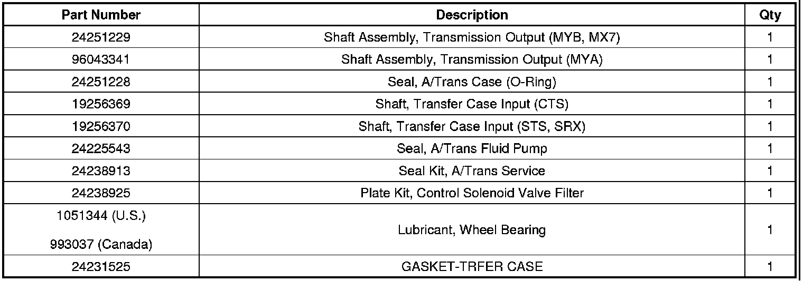
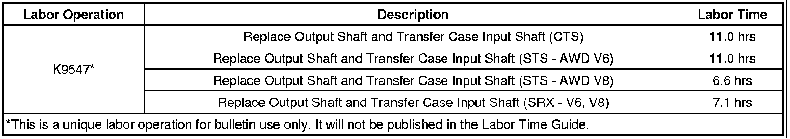

A/T - No Forward or Reverse at Launch Grind Noise
TECHNICALBulletin No.: 10-07-30-005A
Date: May 20, 2010
Subject: No Forward or Reverse at Launch, Grind Noise (Replace Output Shaft and Transfer Case Input Shaft)
Models:
2007-2009 Cadillac SRX
2007-2010 Cadillac STS
2008-2010 Cadillac CTS
Equipped with All-Wheel Drive (RPO MX7) and 6L45 (RPO MYA) or 6L50 (RPO MYB) Automatic Transmission
Supercede:
This bulletin is being revised to update the parts information section to add the gasket for transfer case. Please discard Corporate Bulletin Number 10-07-30-005 (Section 07 - Transmission/Transaxle).
Condition
Some customers may comment that their vehicle has no forward or reverse gear at launch or has a grinding noise when forward or reverse gear is selected. Upon further investigation, technicians may find that the transmission output shaft splines are stripped or damaged.
Correction

A revised transmission output shaft with an O-ring (1) is now available. The transmission output shaft and the transfer case input shaft should be replaced. Typically, there are no damaged internal parts in either the transmission or transfer case. Refer to Transmission Removal (All-Wheel Drive), Output Shaft Removal (6L50) and Transfer Case Assemble in SI.
Important
After repairs, when installing the transfer case to the transmission, make sure to grease the transmission output shaft splines with high temperature wheel bearing grease, P/N 1051344 (Canadian P/N 993037).

Important
Also, verify that the two locating (alignment) pins are pressed into the transfer case as they may stick in the transmission during transfer case removal. If these pins are not in the proper location in the transfer case, proper alignment of the transfer case to transmission is not maintained and damage may result.
Parts Information

Warranty Information

For vehicles repaired under warranty, use the table above.

Disclaimer